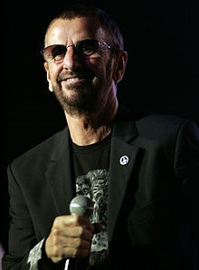

Ringo StarrS
Sir Richard Starkey (born 7 July 1940), known professionally as Ringo Starr,
is an English musician, songwriter and actor who achieved international fame as the drummer for the Beatles

Rang wrote and sang the Beatles songs "Don't Pass Me By" and "Octopus's Garden", and is credited as a co-writer of four others.
Starr was afflicted by life-threatening illnesses during childhood, with periods of prolonged hospitalisation. .
Visit the Beatles
wikipedia page for more details: